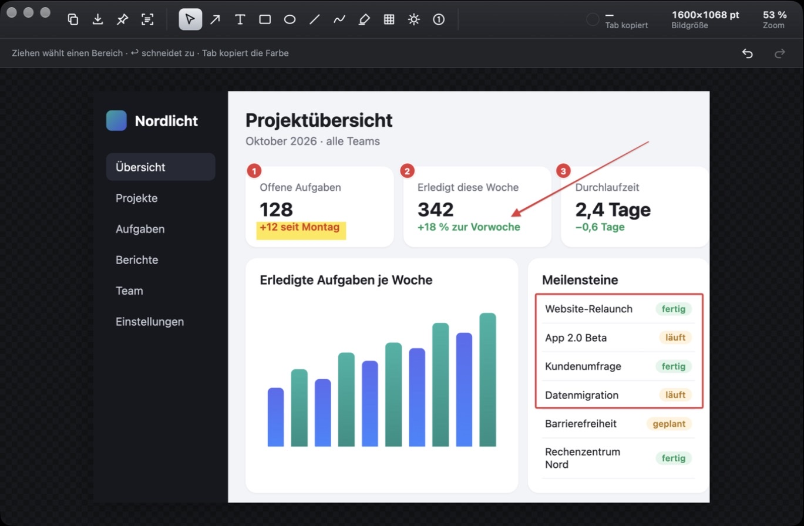
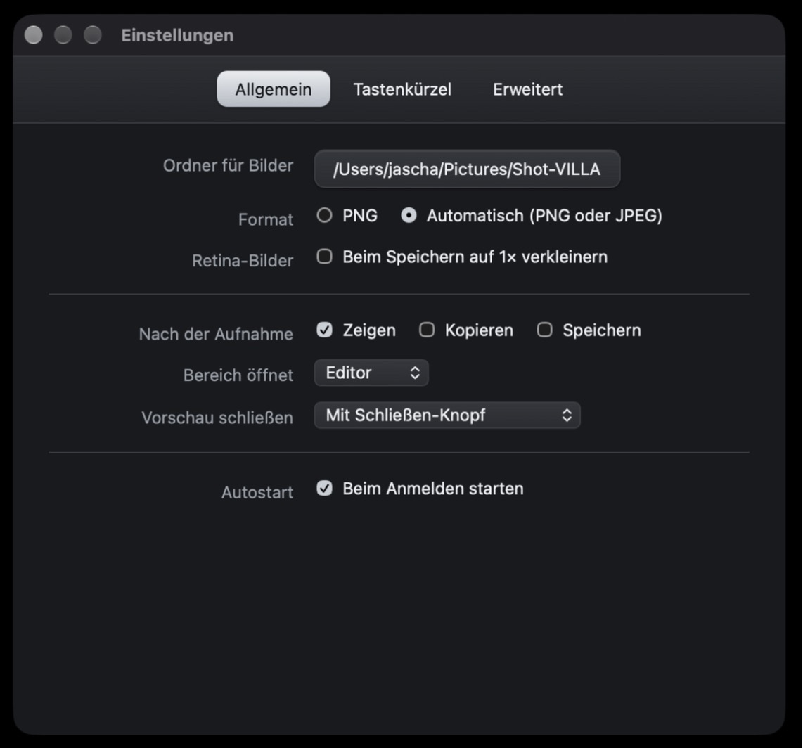
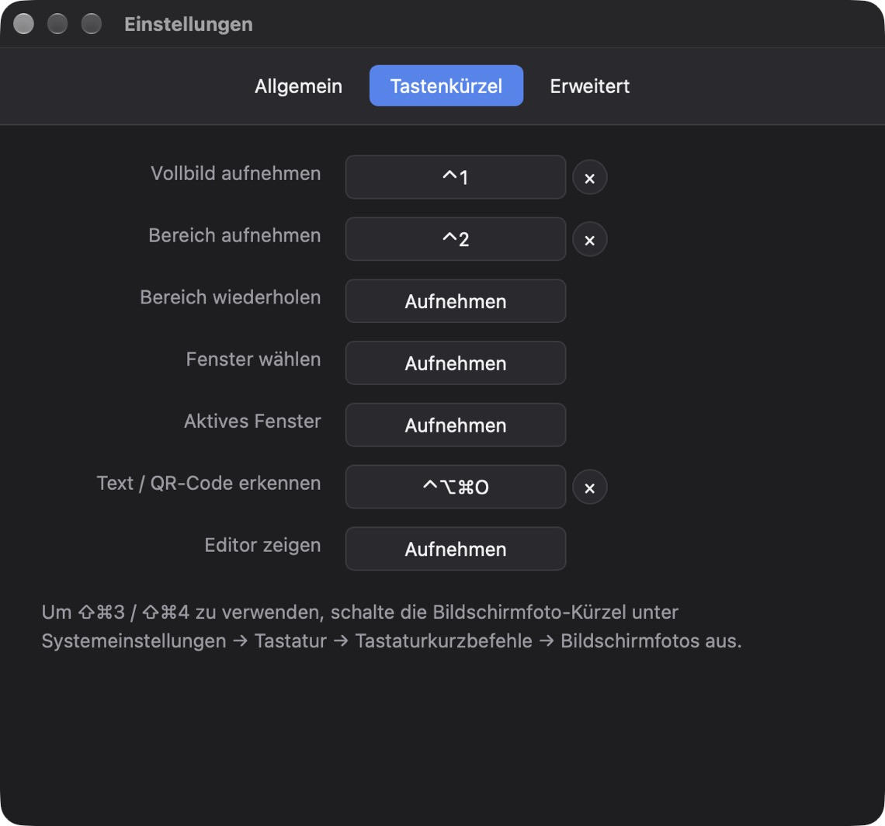
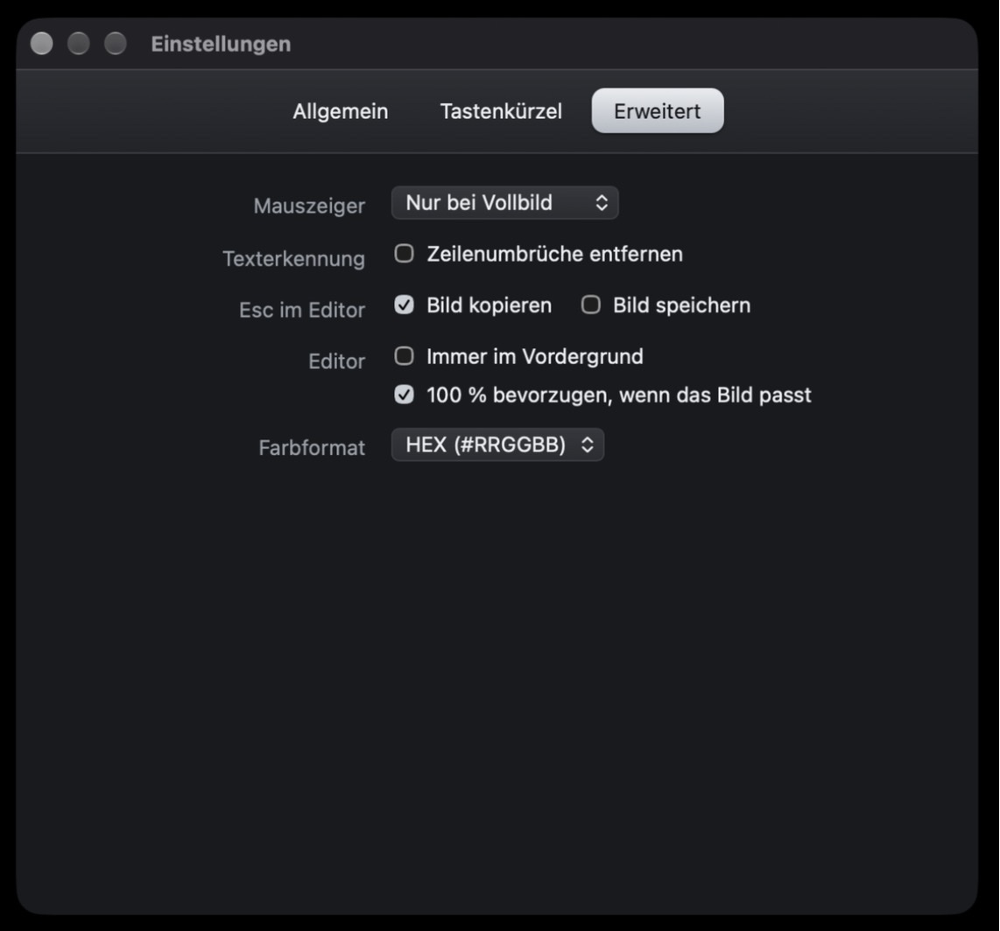

Bildschirmaufnahme Neu
Bereich aufziehen, Video läuft: scharfes MP4 in Retina-Auflösung, Stopp per Knopf oder Kürzel. Rahmen und Leiste bleiben aus dem Video. Auf dem Mac ab macOS 15.
Für macOS und Windows
Kürzel drücken, Bereich ziehen, Pfeil setzen, Esc – und das Bild liegt in der Zwischenablage. Shot-VILLA lebt in der Menüleiste und ist da, wenn du es brauchst.

Aufnehmen, erklären, teilen – in einem Fenster und mit der Tastatur.
Bereich aufziehen, Video läuft: scharfes MP4 in Retina-Auflösung, Stopp per Knopf oder Kürzel. Rahmen und Leiste bleiben aus dem Video. Auf dem Mac ab macOS 15.
Vollbild, Bereich mit Lupe für pixelgenaues Ansetzen, Fenster per Klick samt Schatten, aktives Fenster und „Bereich wiederholen“ für Vorher/Nachher.
Pfeile, Rahmen, Ovale, Linien, Freihand, Text und Etiketten. Jedes Werkzeug hat eine eigene Taste – A für Pfeil, R für Rechteck.
Namen, E-Mail-Adressen oder Passwörter verpixeln oder weichzeichnen, bevor das Bild jemand anderes sieht.
Zähler setzen sich von selbst fort: 1, 2, 3. Dazu Spotlight, das alles außer dem Wichtigen abdunkelt, und ein Textmarker.
Bereich wählen, Text ist kopiert. Funktioniert mit Fehlermeldungen, Videos, PDFs und QR-Codes – erkannt direkt auf dem Mac.
Ein Bild schwebt über allen Fenstern – zum Abtippen, Vergleichen oder als Spickzettel. 50, 100 oder 200 %, auf Wunsch halbtransparent.
Die Farbe unter dem Mauszeiger steht immer oben rechts. Tab kopiert sie als HEX, RGB, CSS oder OKLCH.
Oberflächen als PNG, Fotos als JPEG – automatisch. Retina-Bilder auf Wunsch in Originalgröße, Dateinamen mit Datum und Uhrzeit.
Alle Aufnahmen auf Tasten, die zu dir passen – auch ⇧⌘4, wenn du die Systemkürzel abschaltest.
Vom Download bis zum ersten markierten Bildschirmfoto dauert es keine zwei Minuten.
Lade Shot-VILLA.dmg, öffne die Datei und zieh Shot-VILLA in den Ordner Programme.
Meldet macOS „Shot-VILLA.dmg“ bzw. „Shot-VILLA“ nicht geöffnet, klick auf Fertig. Öffne dann Systemeinstellungen → Datenschutz & Sicherheit, scroll nach unten und klick bei Shot-VILLA auf „Dennoch öffnen“. Das ist einmal für die DMG und einmal beim ersten Start der App nötig. Grund: Shot-VILLA ist nicht bei Apple notarisiert.
Windows: Lade Shot-VILLA-Setup.exe und führ die Datei aus. Zeigt Windows „Der Computer wurde durch Windows geschützt“, klick auf Weitere Informationen → Trotzdem ausführen. Danach liegt Shot-VILLA im Startmenü und im Infobereich der Taskleiste.
Drück ⇧⌘1. macOS fragt nach der Berechtigung, Shot-VILLA zeigt dazu einen Hinweis. Schalte Shot-VILLA unter Datenschutz & Sicherheit → Bildschirm- & Systemaudioaufnahme ein und klick auf Neu starten.
Ohne diese Freigabe zeigt macOS Apps nur den Schreibtischhintergrund. Shot-VILLA nimmt dann gar nicht erst auf und erinnert dich stattdessen.
Mit ⇧⌘2 wird der Bildschirm eingefroren. Zieh einen Rahmen auf – Lupe und Maße helfen beim genauen Ansetzen. Esc bricht ab.
Für ganze Fenster wählst du im Menüleisten-Symbol „Fenster wählen …“ und klickst das gewünschte Fenster an.
Der Editor öffnet sich mit deiner Aufnahme. Wähl ein Werkzeug per Klick oder Taste, setz Pfeile, Rahmen und Zähler. Farbe und Stärke stellst du darunter ein.
Drück Esc – das Bild wird kopiert und der Editor schließt. In Mail, Chat oder Ticket fügst du es mit ⌘V ein.
⌘S speichert auf dem Schreibtisch, ⌘P pinnt das Bild über alle Fenster, ⇧⌘T erkennt den Text darin.
Speicherort, Format, was nach der Aufnahme passiert und jedes Kürzel – erreichbar über das Menüleisten-Symbol oder ⌘,.



Weitere Aufnahmen – Fenster, aktives Fenster, Bereich wiederholen – belegst du in den Einstellungen.
Nein. Aufnahmen, Texterkennung und Einstellungen bleiben auf deinem Mac. Es gibt keine Konten, keine Statistiken und keine Cloud.
Die Kürzel nutzen Strg statt ⌘, also Strg+Umschalt+1 für Vollbild und Strg+Umschalt+2 für einen Bereich. Shot-VILLA sitzt im Infobereich der Taskleiste statt in der Menüleiste. Eine Freigabe für die Bildschirmaufnahme braucht Windows nicht. Die Texterkennung nutzt die Sprachen, die in Windows installiert sind.
macOS schützt den Bildschirminhalt vor Apps. Ohne Freigabe sähe Shot-VILLA nur den Schreibtischhintergrund. Die Freigabe gibst du einmal unter Datenschutz & Sicherheit → Bildschirm- & Systemaudioaufnahme.
Entferne Shot-VILLA in der Liste mit „−“, erlaube es neu und starte
Shot-VILLA neu. Alternativ im Terminal:
tccutil reset ScreenCapture de.villalife.shot-villa
Eine andere App nutzt dieselbe Kombination. Shot-VILLA meldet das in den Einstellungen unter den Kürzeln – wähl dort eine andere Kombination.
Bei vielen Symbolen blendet macOS manche hinter der Kamera-Aussparung aus. Die Kürzel funktionieren trotzdem; schaff in der Menüleiste Platz oder nutze ein Tool zum Sortieren der Menüleiste.